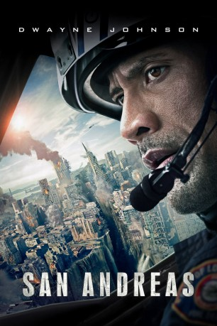
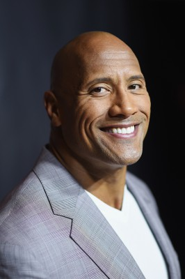
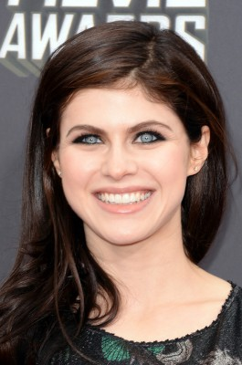
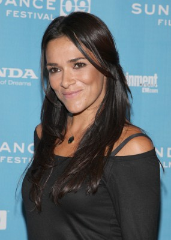
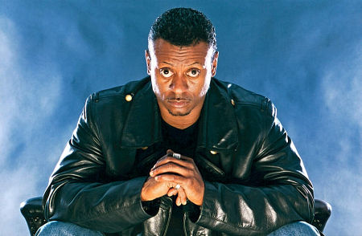
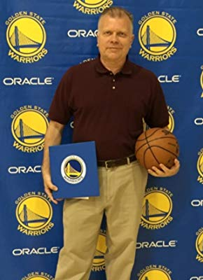

#10986 San Andreas
 
 IMDB-Wertung: 6.1 / 10
IMDB-Wertung: 6.1 / 10  Tomatometer: 51
Tomatometer: 51  Metascore: 43
Metascore: 43 
In Kalifornien ist die berühmt-berüchtigte San-Andreas-Verwerfung eine tickende Zeitbombe: Experten sagen schon lange voraus, dass es irgendwann mal zu einem verheerenden Erdbeben kommen muss, wenn sie sich verschiebt. Die Mega-Metropole Los Angeles wäre davon unmittelbar betroffen. Und wie es das Schicksal nun so will, ist genau heute der Tag des Untergangs gekommen und ein Beben von der Stärke 9 legt alles in Schutt und Asche. Mitten in diesem Chaos versucht sich ein Hubschrauber-Rettungspilot gemeinsam mit seiner Noch-Ehefrau von LA nach San Francisco durchzuschlagen. Denn dort sitzt ihre gemeinsame Tochter fest und wartet verzweifelt auf Hilfe. Doch gerade, als sich die Lage zu beruhigen scheint, geht es erst richtig los und viele Gefahren stellen sich dem Paar in den Weg…
Jahr: 2015
Dauer: 114 Minuten
FSK: 12
Land: USA Studio: Warner Bros.Tonspuren: DD5.1 - ,
Untertitel: Deutsch,
Auflösung: 1080p (1920x800) Größe: 8949 MB
Genre: Action, Thriller, Drama, Abenteuer
Regisseur: Brad Peyton
Drehbuch: Carlton Cuse, Andre Fabrizio, Jeremy Passmore, Carlton Cuse, Andre Fabrizio
Soundtrack: Andrew Lockington
Darsteller:
-  Dwayne Johnson als Raymond Gaines
- Carla Gugino als Emma Gaines
-  Alexandra Daddario als Blake Gaines
 Ioan Gruffudd als Daniel Riddick
Ioan Gruffudd als Daniel Riddick- Archie Panjabi als Serena Johnson
 Paul Giamatti als Dr. Lawrence Hayes
Paul Giamatti als Dr. Lawrence Hayes- Hugo Johnstone-Burt als Ben Taylor
 Art Parkinson als Ollie Taylor
Art Parkinson als Ollie Taylor- Will Yun Lee als Dr. Kim Park
- Kylie Minogue als Susan Riddick
- Colton Haynes als Joby O'Leary
- Todd Williams als Marcus
 Matt Gerald als Harrison
Matt Gerald als Harrison- Alec Utgoff als Alexi
- Marissa Neitling als Phoebe
- Morgan Griffin als Natalie
- Breanne Hill als Larissa
- Laurence Coy als Elgin
- Fiona Press als Margie
- Ben McIvor als Dylan
- Claire Lovering als Glasses
- Julian Shaw als Stoner
- Sofie Formica als Refugee Camp Reporter
- Brad McMurray als Riddick Building Security Guard
- John Reynolds als Daniel Riddick's Driver
-  Simone Kessell als Kim Swann
- Saskia Williscroft als Jenny Swann
- Arabella Morton als Mallory
- Hayley Sullivan als Riddick Female Assistant
- Joey Vieira als Man in Parking Garage
- Benjamin Blankenship als Looter #1
- Nikki Green als Female Teen Messenger
- Michael Asberry als Pedestrian #3
- Cynthia Acosta als Business Woman (uncredited)
- Ahku als Man on the Bridge (uncredited)
- Richard Allen als Police Sergeant (uncredited)
- Moises Amaya als Earthquake Survivor (uncredited)
- Martin Sta Ana als Business Man (uncredited)
- AnnaCorey als Julie Tsunami Victim (uncredited)
- Leilani Amour Arenzana als Earthquake Survivor (uncredited)
- Ari Atken als Disaster Resident (uncredited)
- Oscar Bailey als Kid on Bike (uncredited)
- David Blount-Porter als Businessman (uncredited)
 Hunter Stratton Boland als Earthquake Survior (uncredited)
Hunter Stratton Boland als Earthquake Survior (uncredited)-  Jaymes Butler als Store Owner (uncredited)
- Kaylea Caulfield als Young Blake (uncredited)
-  Cabran E. Chamberlain als San Francisco Tourist (uncredited)
- Stephen Chang als D . Park (uncredited)
- Chris Charteris als Civilian (uncredited)
- Dustin Christenson als Attendee (uncredited)
Datei: X:\2015(N-Z)\San Andreas (2015, FSK12, 1920x800).mkv seit 16.04.2019
Festplatte: HD 2015(A-Z)
 Es gibt insgesamt 161 Filme in der Gruppe '2015(N-Z)'
Es gibt insgesamt 161 Filme in der Gruppe '2015(N-Z)'